DCA - Technical report
(Source code, png, hires.png, pdf)


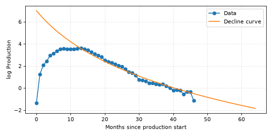
Note
This report is more static in nature than the rest of the documentation. Always check the API documentation, docstrings and code for details.
Abstract
Decline Curve Analysis (DCA) is the process of fitting curves to well production time series data.
The purpose of DCA is typically to either (1) analyze past well behavior or (2) predict future production (forecasting).
The most commonly used curve is the three-parameter Arps equation.
Arps is an extension of the Exponential equation that permits sub-exponential decline under certain parameter choices.
The most commonly used loss function is least squares loss.
In this report we discuss our experiences after years of working with DCA.
We state useful analytical properties of the Arps equation, give practical tips for preprocessing data for DCA, and generalize the least squares loss function to CurveLoss.
Introduction and previous work
Decline Curve Analysis (DCA) dates back to the start of the 1900s, and the history is detailed in [ARP45]. Jan J. Arps proposed fitting observed production to a curve of the form
which we will refer to as the Arps equation.
(Source code, png, hires.png, pdf)


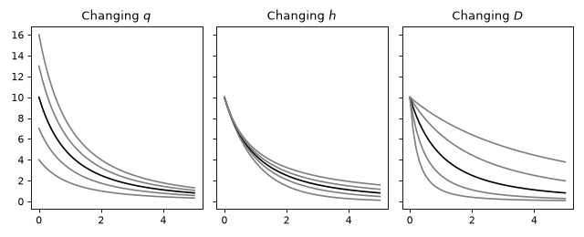
Fitting in the 1940s was done graphically on paper or by algorithms specific to the curve being fit. These days we use general purpose algorithms for minimizing loss functions.
Many recent papers describe DCA and suggest marginal improvements, but overall the core methodology is unchanging. For instance, [TANG21] propose taking the logarithm of the production rate before fitting a decline curve. [LIU18] list eight different DCA models, e.g. Arps, power law, stretched exponential, and so forth. A non-quantitative comparison is provided. [LIANG20] compare 18 different DCA models. Wells are classified as one of three different types based on first year performance, and for each type of well a different recommendation is given. Unfortunately no quantitative error metrics are given. Other papers are [JOCH96].
The papers above are published. However, when searching the internet one finds many low-quality reports concerning DCA. They are typically all over the place in terms of methodology, have few or no quantitative error metrics, contain pixelated or unintelligible figures, are not proofread, have not been peer-reviewed, and so forth.
In our view the exact form of the DCA model is not as important as (1) the loss function, (2) the data quality and (3) the data preprocessing. We also believe that while examining individual wells is worthwhile, such an analysis must be accompanied by a birds-eye view of performance over many wells. It is always possible to find individual wells where performance is particularly good or bad, so we must assess overall error in our analyses.
Decline Curves
This section contains information about decline curves. Any curve \(f(t; \boldsymbol{\theta})\) that is (1) positive, (2) decreasing and (3) goes to zero is a candidate curve for use in DCA. One way to find such curves is to consider probability density functions (PDFs). In fact, both the Exponential curve and the Arps curve are of this form:
the Exponential curve is the PDF of the exponential distribution
the Arps curve is the PDF of the generalized Pareto distribution
The Exponential curve
The simplest decline curve is the exponential curve \(f(t; C, k) = C \exp(-kt)\) with parameters constrained to be positive.
A re-parametrization that leads to parameters that are not constrained to be positive, and are generally on the same order of magnitude, is:
This leads to the following equation:
Integrals, gradients and other mathematical properties are simple to derive, and will not be presented here (see the code and the class Exponential).
Do notice that \(\int_0^{\infty} f(t; C, k) \, dt = C/k = \exp(\theta_1)\), so the logarithm of the integral is equal to \(\theta_1\).
This gives the parameter \(\theta_1\) a nice interpretation.
The parametrization above also has the property that \(\lim_{\theta_3 \to -\infty} \text{arps}(\theta_1, \theta_2, \theta_3) = \text{exponential}(\theta_1, \theta_2)\).
The Arps curve
(Source code, png, hires.png, pdf)


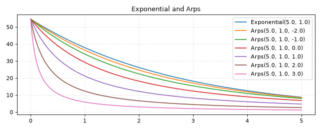
The Exponential curve and Arps curve for various values of \(\theta_3\). As \(\theta_3\) goes to negative infinity, the Arps curve converges to the Exponential curve.
Following the notation in [LEE21], the Arps curve is given by
The parameters \(q\) and \(D\) are constrained to be positive. If \(0 < h < 1\), then \(\int_0^{\infty} f(t) \, dt\) is finite. In the limit \(h \to 0\), we have \(\left(1 + hDt \right)^{-1/h} = \exp \left( -Dt \right)\). This follows from one of the definitions of \(\exp (x)\), namely \(\exp x = \lim_{n \to \infty} \left(1 + \frac{x}{n}\right)^n\).
Integrals
Since \(f(t; q, h, D)\) is fit to a time series of production rates (e.g. production per day), it’s useful to be able to integrate the Arps curve to obtain total production up to a certain point in time.
Some useful integral relationships are:
More integrals, gradients and transformations are implemented in the code, see Arps.
Reparametrization
As shown in [LEE21], the Arps curve is identical to the (scaled) generalized Pareto distribution after a reparametrization:
When we apply the transformation, we obtain the logarithm of the Arps curve as
which is Equation (3.3) in [LEE21]. Notice that \(\theta_1\) determines the logarithm of the integral: \(\exp \theta_1 = q / ((1 - h) D) = \int_0^\infty f(t; q, h, D) \, dt\). Thinking in terms of scaled probability distributions opens up an interesting possibility: any sensible probability density function can be scaled and used for DCA, e.g. the Weibull distribution or the Gamma distribution.
Working in \((\theta_1, \theta_2, \theta_3)\)-space instead of \((q, h, D)\)-space has some practical advantages:
Parameters on the same scale. In \(\boldsymbol{\theta}\)-space all parameters are on the same order of magnitude. This will help an optimizer. On the original scale \(q\) is typically large, while \(h \approx 1\).
Parameters are unbounded. In \(\boldsymbol{\theta}\)-space all parameters are unbounded. This makes it easy to set up a multivariate normal prior. Working in \((q, h, D)\)-space we would need different probability distributions for the parameters, to impose the constraints \(0 < h < 1\) and \(D > 0\).
(Source code, png, hires.png, pdf)


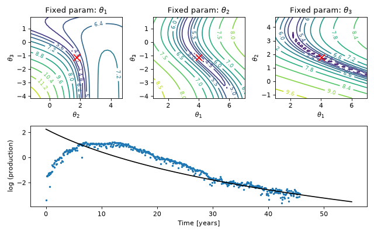
This figure shows the contours of the loss function in \(\boldsymbol{\theta}\)-space for a curve fit.
Integrals of the reparameterized Arps curve
The equation is simply the logarithm of the Arps curve, with an alternative parametrization. Its integrals are:
The mathematical model
This section explains how raw input data should be transformed to a tuple \((t, y, w)\) for use in curve fitting. Curve fitting routines minimize an error, and this section also explains how to set up an appropriate error model.
The curve \(f(t; \boldsymbol{\theta})\) must be tied to the data somehow. Here is an example of the data that we receive:
production = [ 10, 8, 5, 3]
time_on = [0.9, 0.7, 0.8, 1.0]
time = ["2020-01", "2020-02", "2020-03", "2020-04"]
The variable production contains the total production within each time period.
The variable time_on is a fraction that indicates the uptime of the well within each period.
The variable time is mostly used for bookkeeping; it represents the period at each index and can be in yearly, monthly, daily or even hourly resolution.
Typically a period represents a month or a day.
Switching to mathematical notation, let \(\boldsymbol{p}\) be a vector with observed production and \(\boldsymbol{\tau}\) be “time on” (i.e. uptime).
Let \(\xi_i\) be the cumulative sum of time_on up until time period \(i\), i.e., \(\xi_i = \sum_{j=0}^i \tau_j\).
(Source code, png, hires.png, pdf)


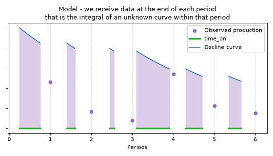
The mathematical model visualized. At the end of each period we observe the total production \(p_i\) within that period. We assume that \(p_i\) is the integral of an unknown curve \(f(t; \boldsymbol{\theta})\).
We assume that production within each time period is the integral of the curve within that period. Recall that the units for the curve is production per time. Assuming that each time period represents a small unit of time, we can use the midpoint rule \(\int_a^b f(t) dt \approx (b - a)f((a+b)/2)\) to approximate the integral. Since decline curves typically are convex and decreasing, the midpoint rule will underestimate slightly.
In the equation above, we define \(t_i = (\xi_i + \xi_{i-1})/2 = \xi_i - \tau_i/2\). When we use the midpoint rule, we can fit \(f(t; \boldsymbol{\theta})\) to the observed values directly instead of fitting the integral. This is simpler, because computing the gradient \(\nabla_\boldsymbol{\theta} f(t; \boldsymbol{\theta})\) for BFGS is easier than computing the gradient of the integral.
(Source code, png, hires.png, pdf)


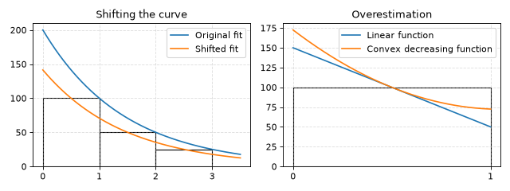
In this figure we assume the well is always on. The midpoint rule shifts the curve to the left so the integral closely matches the sum. If the curve is linear, then the integrals match the sum perfectly. However, since decline curves are decreasing and convex, we do end up with a slight bias: the midpoint rule underestimates the integral.
The error model. We will now introduce the error model. We assume that errors \(\epsilon_i \sim N(0, \sigma)\) are tied to the order of magnitude of the production rate. For instance, if the production rate is \(100\), then the probability of producing \(100 (1.2)\) is equal to the probability of producing \(100 (1/1.2)\). Or, if the production rate is \(10\), then the probability of producing \(10 (1.5)\) is equal to the probability of producing \(10 (1/1.5)\). This leads us to fit on the log scale. The full model becomes:
In the equation above, we defined the average production rate as \(y_i = p_i / \tau_i\). Going back to the original scale by exponentiating both sides of the equation above, the model becomes
and this tells us how to simulate data from the model, which we’ll use to forecast.
Going back to the example data, we can create the following values and pass them to a curve fitting routine:
production = [ 10, 8, 5, 3]
time_on = [0.9, 0.7, 0.8, 1.0]
time = ["2020-01", "2020-02", "2020-03", "2020-04"]
t = [ 0.45, 1.25, 2, 2.9]
y = [11.11, 11.43, 6.25, 3]
w = [ 0.9, 0.7, 0.8, 1.0]
The weights \(w_i\) for the regression are obtained by a simple argument: data from ten short periods should give the same information as data from one long period that is ten times longer. Therefore the weighting should be proportional to the duration of each period, i.e. \(\tau_i\).
Alternatives to fitting production rates on log-scale
Fitting on the original scale. Instead of assuming \(\log y_i = \log f(t_i; \boldsymbol{\theta}) + \epsilon_i\), we could assume that \(y_i = f(t_i; \boldsymbol{\theta}) + \epsilon_i\). From a curve fitting perspective, fitting data to model instead of log-data to log-model means that the model will work hard to minimize errors when \(y_i\) is large. Well production data has \(y_i\)-values on vastly different scales over the lifetime of a well, and large residuals occur when \(y_i\) is large. From a forecasting perspective this is unfortunate, since the most recent history has low production values and matters the most for forecasting (the recent past is more important than the distant past).
From a statistical perspective, the model
is nonsensical, since:
Errors \(\epsilon_i\) are independent of the \(y_i\) values, but this does not reflect real data. If production is on the order of a million units, then we expect completely different errors compared to when the production is on the order of a thousand units.
Simulating from this model will lead to negative production values, especially when \(t\) is large and production is low. Then \(f\left( t ; \boldsymbol{\theta} \right) \approx 0\) and simulating from the error term \(\epsilon_i\) will produce negative values.
Fitting cumulatives. From a curve fitting perspective we could fit
for every period \(j\), but the issue is again the relative sizes of the residuals as well as the error model. Where would one place residuals in such a model?
If we add the error term \(\epsilon_i\) on the original scale, then we must at the very least account for the fact that errors accumulate over the whole history:
But the above model also assumes that the errors are constant over time, whereas in reality the errors are clearly dependent on the production values. A stochastic integral like \(\sum_{i=0}^j p_i = \int_{0}^{\tau_j} f(t; \boldsymbol{\theta}) \exp(\epsilon(t)) \, dt\) might work, but it does not appear that such a model will lead to any improvements. It’s hard to compute and unnecessarily complex with no apparent gain.
Time series preprocessing
This section outlines two ways of preprocessing data: the producing time transform and the calendar time transform.
(Source code, png, hires.png, pdf)


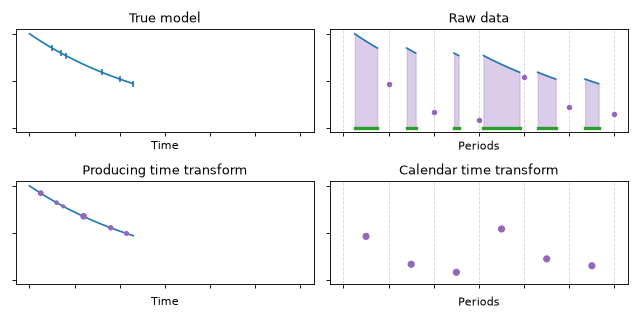
In this figure, the true model is an exponential function. At the end of each time period, we observe the total production (dots) that occurred within each time period. This production is the integral of the true model over the time on (uptime). Two preprocessing transformations are shown: (1) the producing time transform and (2) the calendar time transform. Forecasting with (1) answers the question “how much will this well produce in the future if it’s always on?” and forecasting with (2) answers the question “how much will this well produce in the future if its future uptime is roughly equal to its past uptime?”
As in the section above, let \(\boldsymbol{p}\) be observed production within each time period and \(\boldsymbol{\tau}\) be time on. The variable \(\xi_i\) denotes the cumulative sum of time on up until time period \(i\), i.e., \(\xi_i = \sum_{j=0}^i \tau_j\).
The producing time transform. We can use DCA to forecast the future well production potential, i.e., how much a well will produce in the future if it is always producing (no downtime). For curve fitting, we need a triple \((\boldsymbol{t}, \boldsymbol{y}, \boldsymbol{w})\) of \(t\)-values, \(y\)-values and weights \(w\). The producing time transform is given by
To create the \(t\)-values, we contract time as if the well was always on and place each \(t\)-value at the midpoint. To create the \(y\)-values, we divide production by time on to get production rates. To create the weights \(w\), we use the time on within each period.
The calendar time transform. We can use DCA to forecast how much a well will produce if time on in the future is roughly equal to time on in the past. The calendar time transform simply sets \(\tau_i = 1\) for all periods \(i\). The resulting transform is
Which transform to use depends on the question that DCA is supposed to answer. The producing time transform answers the question “what will this well produce if it’s always on in the future?”. The calendar time transform answers the question “what will this well produce if the uptime in the future is roughly equal to the uptime in the past?”.
Regardless of which transform we choose, some prior data cleaning should be done. Missing values, zero values and inconsistent values must be dealt with.
Loss functions for DCA
The curve fitting problem is, given vectors \((\boldsymbol{t}, \boldsymbol{y}, \boldsymbol{w})\), to find parameters \(\boldsymbol{\theta}\) such that \(f(\boldsymbol{t} ; \boldsymbol{\theta})\) is close to \(\boldsymbol{y}\). The function \(f\) can be the Arps curve, the exponential function, the scaled Weibull distribution, or some other function. We will assume that \(f\) is the Arps curve. See [BOYD04] for more on loss and optimization.
Least squares loss
To our knowledge, all previous DCA in Equinor that used Python have relied upon the optimization routine scipy.optimize.curve_fit. This routine determines \(\boldsymbol{\theta}\) as the solution to the least squares optimization problem
which is equivalent to assuming \(y_i = f(t_i ; \boldsymbol{\theta}) + \epsilon\) with \(\epsilon \sim \text{Normal}(0, \sigma)\) and maximizing the log-likelihood
with respect to \(\boldsymbol{\theta}\).
The loss function defined by the likelihood above is sensible if the assumptions hold. Here, the assumptions are roughly speaking that:
The errors \(\epsilon\) are normally distributed. If they are not, then the model will be very sensitive to outliers. In least squares, doubling the error increases the penalty by four.
We care about errors on the original scale. If we care more about relative errors, or errors on the multiplicative scale, then least squares is not appropriate.
We care equally about each data point. If we care more about fitting to recent data, then least squares is not appropriate. Fitting to all previous data well does not mean that we predict future data as well as we could. Weighting the most recent data more heavily might be more sensible in forecasting problems.
Our position is that in DCA, none of these assumptions hold up very well.
We suggest customizing the loss function instead of using the scipy.optimize.curve_fit routine.
A custom loss function can be used in conjunction with scipy.optimize.minimize to fit curves.
An improved loss function
We propose the loss function
where \(w_i\), \(y_i\) and \(t_i\) are data and \(\boldsymbol{\theta}\) is the unknown vector of curve parameters that we’re optimizing.
This equation is implemented as CurveLoss.
The least-squares loss is modified by adding the following terms:
\(W(t_i, \gamma)\) is a weighting function that scales up the contribution of the most recent data,
the weighting function \(W(t_i, \gamma)\) is parametrized by the half-life \(\gamma\),
\(1 \leq p \leq 2\) is a hyperparameter determined by cross-validation,
a multivariate normal prior is put on \(\boldsymbol{\theta}\) (the second term with the quadratic function),
the strength of the prior is given by \(\alpha\) and determined by cross-validation.
Notice how \(\mathcal{L}\) is an extension of the least squares loss. We allow \(p\) to vary between \(2\) (MSE, minimized by the arithmetic mean) and \(1\) (MAE, minimized by the median). Then we add weights to more recent data points (since the recent past might be more predictive of the future). Finally we add a multivariate normal prior by introducing a prior mean \(\boldsymbol{\mu}_{\boldsymbol{\theta}}\) and prior covariance \(\boldsymbol{\Sigma}_{\boldsymbol{\theta}}\). The least squares loss is a subset of this loss, and if least squares leads to the best performance, then cross-validation will tell us so.
Multiplicative errors
It might be better to use multiplicative errors compared to squared errors, i.e. fitting the log-model against the log data. Consider the simplest model: fitting a mean value by \(f(\boldsymbol{t}; \theta) = \theta\). Fitting to data \(\boldsymbol{y} = \left(1, 10, 100\right)\) by minimizing least squares gives the arithmetic mean \(\theta = 37\). Loss above and below balance on the additive scale.
Fitting to the same data by minimizing log model against log data gives \(\log_{10}(\theta) = 1\), so \(\theta = 10\). Loss above and below are balanced in the multiplicative sense, since multiplying by \(10\) is as erroneous as dividing by \(10\).
Fitting without taking logs forces the optimizer to work hard at fitting the first few data points at the expense of the last data points. This is due to the magnitude of the errors in the beginning of the time series, when production is large due to the high pressure in the well. When we are trying to predict the future, focusing on the first errors at the expense of the last errors in time series seems counterproductive.
(Source code, png, hires.png, pdf)


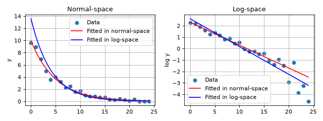
Two curves fitted to data. Fitting to \(y = a + bt\) in log-space and exponentiating the result is not equivalent to fitting \(y = \exp (a + bt)\) in normal-space.
Setting \(p\) to be a hyperparameter
We’ve observed that when we try to minimize forecasting error as measured by RMSE, the exponent \(p\) in \(\mathcal{L}\) should often be closer to \(1\), rather than \(2\). This is a bit surprising, since choosing \(p=2\) means choosing the loss function that minimizes the RMSE metric. However, when \(p=1\) we’re fitting the median curve (percentile regression), which is more robust to outliers. We propose to let \(p \in [1, 2]\) be a hyperparameter, to be determined by cross validation on the data and prediction task.
(Source code, png, hires.png, pdf)


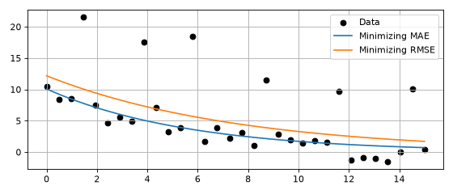
Two curves fitted to data with outliers. The curves use different \(p\) norms, and we observe that \(p=1\) is robust to outliers.
Weight recent data points more heavily
We propose adding weights \(W(t_i, \gamma)\) to each term in the loss function. The loss function then becomes
We set \(W(t_i, \gamma) = C 2^{(t_i - \max_i t_i) / \gamma}\), where \(\gamma\) is the half-life of the exponential decay and \(C\) is a constant. For instance, a half-life of \(\gamma = 12\) months means that the 12th most recent data point gets a relative weight of \(50 \%\), the 24th data point gets a weight of \(25 \%\), the 36th data point gets a weight of \(12.5 \%\), and so forth. We determine \(C\) by the constraint \(\sum_{i=1}^n W(t_i, \gamma) = n\). The half life \(\gamma > 0\) becomes a hyperparameter, to be determined by cross validation on the data and prediction task.
(Source code, png, hires.png, pdf)


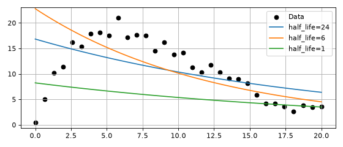
A small half-life leads the curve to fit more recent data better.
Use priors on the parameters
Finally we set a prior on \(\boldsymbol{\theta}\). A multivariate normal prior leads to a term with a quadratic form \(\left( \boldsymbol{\theta} - \boldsymbol{\mu}_{\boldsymbol{\theta}} \right)^T \boldsymbol{\Sigma}_{\boldsymbol{\theta}}^{-1} \left( \boldsymbol{\theta} - \boldsymbol{\mu}_{\boldsymbol{\theta}} \right)\) in the log-likelihood. The prior is chosen based on inspecting the data set, and it serves several purposes:
makes fitting a curve when we have fewer data points than parameters possible,
helps regularize the curve when there is little information,
makes the numerical routines more stable, and provides an alternative to hard constraints on the parameter space.
In \(\mathcal{L}\) we set a parameter \(\alpha\) in front of the prior, which determines regularization strength. This parameter could alternatively be absorbed into \(\boldsymbol{\Sigma}_{\boldsymbol{\theta}}^{-1}\), but separating it out can be helpful.
For more on Bayesian statistics, see [BISH11], [MCEL20], [GELM13]
Uncertainty and EUR-forecasting
This section contains information about how to incorporate uncertainty into forecasts with Arps curves.
Note that:
We do not consider full posterior predictive uncertainty, since we ignore uncertainty in \(\boldsymbol{\theta}\). This uncertainty could be incorporated, but would make the code more complex and potentially more slow. A Laplace approximation or full Markov chain Monte Carlo could be used to capture this uncertainty. But we believe that it is unnecessary; we typically have a lot of data (wells on steady decline require significant history) and in that case the uncertainty in the parameters \(\boldsymbol{\theta}\) is low.
The uncertainty that we capture is only with respect to the model and the data, not with respect to everything that might happen to a real-life well (interventions, stopping, adding other wells, injectors, etc).
We take a pragmatic approach: the goal is to get good probability estimates in reasonable time, not construct a perfect theoretical model.
On the original scale
If we assume normally distributed errors on the observed scale (not log-scale), we can construct a probability model like
which is equivalent to the model \(y_i = f(t_i ; \boldsymbol{\theta}) + \epsilon_i\) with \(\epsilon_i \sim \mathcal{N}(0, \sigma)\). This is not a very realistic model: we can estimate negative production, and the model assumes that the errors are on the absolute scale. Still it is instructive to look at this model first, before we study a more realistic log-scale model.
Suppose we wish to estimate the EUR (Estimated Ultimate Recovery) with associated uncertainty. We have observed \(n\) data points so far, and the final time we have observed is \(t_n\). We must first form the sum \(\sum_{i=0}^n y_i\) of what we have observed, then we must sum our predictions for the future \(\sum_{i=n+1}^N \hat{y}_i\).
The EUR calculation with uncertainty becomes:
where we have used fact that a sum of \(n\) normal variables \(\mathcal{N}(0, \sigma)\) is a normal variable with distribution \(\mathcal{N}(0, \sigma \sqrt{n})\). The EUR decomposes into three parts: the sum of observed production in each period where we have data, the integral of the model from the last observed period forward in time, and the random noise.
Only the last term is stochastic, so the uncertainty is captured in that term, which has a closed-form distribution. Notice how the uncertainty range grows like \(\sqrt{n}\) into the future.
On the log-scale
The model above with errors on the original scale assumes that the magnitude of the errors are independent of the size of the observations \(y_i\). In reality, a more accurate model is to assume that errors are on the log scale. For instance, going 20% over the predicted value has a constant probability, no matter what the production value \(y_i\) is. To accomplish this we fit the log-model to the log-data, and the model becomes
which is equivalent to \(\log (y_i) = \log \left( f(t_i ; \boldsymbol{\theta}) \right) + \epsilon_i\) with \(\epsilon_i \sim \mathcal{N}(0, \sigma)\).
To obtain EUR, we again sum the estimates with the uncertainty:
In this model, final prediction term is a sum-of-products, so we cannot decompose the randomness from the predicted mean. However, the equation above can be Monte-Carlo simulated: by drawing random values of \(\epsilon_i\) and computing sums we obtain the distribution of the EUR.
The errors in the log-scale model implicitly depend on the time resolution
The log-scale model is not invariant to re-sampling the data at finer or coarser resolutions. The model depends on the data resolution, since it places a log-normal error on each period and the sum of lognormals is not lognormal. This means that using the model on monthly resolution vs. daily resolution will not produce identical results.
The practical take-away is that the resolution should be such that the model equation \(\log ( y_i ) \sim \mathcal{N}\left( \log f(t_i ; \boldsymbol{\theta}), \sigma \right)\) is reasonable. In other words: look at the residuals and see that they are approximately normal in log-space.
P10 and P90 curves
Another advantage of fitting on the log-scale is that P10 and P90 curves are easy and natural to construct. Under our \(\boldsymbol{\theta}\) parametrization of the Arps curve we have
so constructing curves for percentiles like P10 and P90 is easily done. This amounts to multiplying \(q\) with \(\exp(\alpha \sigma)\) in the original parametrization. To see why this is true, recall the relationship \(q = \exp(\theta_1) (1-h ) D\) between the two parametrization, so
The same does not apply if we fit in the original space, since \(f(t ; \boldsymbol{\theta}) + \alpha \sigma\) is not in the family of Arps curves (it does not decay to zero).
Note that P10 and P90 curves represent pointwise uncertainty for each individual period, and cannot be integrated directly to obtain the EUR. The sum of P90 values of each period is not equal to the P90 of the sum of periods, so simulation must be performed as outlined above.
The AR(1) regression model
Forward simulation
Real wells exhibit autocorrelation that can sometimes be quite strong. We capture autocorrelation by the parameter \(\phi\) using the following model, which is a blend of an AR(1) process and a non-linear regression.
The parameters are \((\theta, \phi, \sigma, \beta)\) and \(\operatorname{GN}\) is the generalized normal distribution. Given data \((\tau_i, t_i)\) and parameters \((\theta, \phi, \sigma, \beta)\), the model above gives a recipe for how to simulate \(y_i\).
(Source code, png, hires.png, pdf)


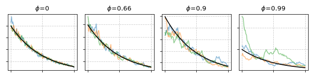
Simulations from the model, showing the DCA curve in black.
If the purpose was to merely estimate the curve parameters \(\theta\), then whether we use independent errors or an AR(1) structure matters little. However, when it comes to predicting uncertainty in forecasts by forward simulation, modeling autocorrelation helps a great deal. Modeling autocorrelation helps create realistic-looking forecasts and therefore realistic uncertainty estimates.
The probability density function of the GN is given by:
Parameter estimation
To infer parameters, we need a posterior distribution to maximize. Recall that the posterior answers the question: given observed data \((\tau_i, t_i, y_i)\), what are the most likely parameters?
Let us first consider the initial condition. At steady state, the AR1 process has a steady state variance
where \(\Gamma(\cdot)\) is the gamma function.
If \(\phi \approx 0\), then the steady state distribution is a generalized normal distribution. If \(\phi \gg 0\), then the steady state is a weighted sum of generalized normal distributions, and we appeal to the central limit theorem and approximate the steady state as normally distributed. Our approximation is only wrong if \(\phi \approx 0\) and \(\beta \ll 2\), and even then it’s only wrong on one data point (the initial condition).
The likelihood steady-state initial condition becomes:
The remaining terms have likelihood:
Gradient of log-likelihood - general case
On an arbitrary data point that is not the first one (where the initial condition applies), we obtain the gradient by first looking at the negative log-pdf of the generalized normal distribution:
Using the Prais–Winsten trick, we transform the regression with a weighted difference, creating independent errors to regress on.
Let us put an arbitrary likelihood weight \(w(\beta)\) on the negative log-likelihood. Differentiating with respect to the curve parameters \(\theta\), we obtain
as long as we have the gradient of the curve parameters available, i.e. \(\partial_\theta \log(f(t; \theta) )\), the above can be computed.
Differentiating with respect to the autocorrelation parameter \(\phi\), we obtain
Differentiating with respect to the error parameter \(\sigma\), we obtain
Finally, differentiating with respect to the scale parameter \(\beta\), we obtain
where \(\psi\) is the digamma function.
If \(w\) is not a function of \(\beta\), then the above simplifies to
Gradient of log-likelihood - initial condition
In a similar fashion, gradients of the initial condition can be computed. Recall that the initial condition is given by the negative log-pdf of a normal distribution:
Let us differentiate \(\sigma_0(\sigma, \beta, \phi)\) first:
We can now use the chain rule to differentiate the negative log pdf with respect to the parameters.
Differentiating with respect to the curve parameters \(\theta\), we obtain
Differentiating with respect to the autocorrelation parameter \(\phi\), we obtain
Differentiating with respect to the error parameter \(\sigma\), we obtain
Finally, differentiating with respect to the scale parameter \(\beta\), we obtain
If \(w\) is not a function of \(\beta\), then the above simplifies to only the second term:
Summary
Even though the Arps curve dates back to the 1940s, we still believe it’s the best choice when predicting future production for on-shore gas wells. While other models might also be worth examining, we find that the largest performance gains are achieved when adjusting the loss function. In other words, how recent data is weighted, how data is preprocessed, whether we are sensitive to outliers or not, and other questions like these, matter more than the exact parametric form of the DCA model.
We back our claim up with a quantitative study based on 15,000 on-shore gas wells. Keeping the DCA model constant (using the Arps curve) and adjusting the loss function, we obtain a 25% reduction in forecasting RMSE.
Bishop, Christopher M., “Pattern Recognition and Machine Learning,” Springer, New York, April 2011. ISBN 978-0-387-31073-2.
McElreath, Richard, “Statistical Rethinking: A Bayesian Course with Examples in R and STAN,” 2nd Edition, Chapman and Hall/CRC, Boca Raton, March 2020. ISBN 978-0-367-13991-9.
Lee, Se Yoon and Mallick, Bani, “Bayesian Hierarchical Modeling: Application Towards Production Results in the Eagle Ford Shale of South Texas,” Sankhya B, January 2021. DOI 10.1007/s13571-020-00245-8.
Gelman, Andrew, et al., “Bayesian Data Analysis,” 3rd Edition, Chapman and Hall/CRC, Boca Raton, November 2013. ISBN 978-1-4398-4095-5.
Arps, J.J., “Analysis of Decline Curves,” Transactions of the AIME, Vol. 160, pp. 228-247, December 1945. DOI 10.2118/945228-G.
Jochen, V. A. and Spivey, J. P., “Probabilistic Reserves Estimation Using Decline Curve Analysis with the Bootstrap Method,” SPE Annual Technical Conference and Exhibition, October 1996. DOI 10.2118/36633-MS.
Boyd, Stephen and Vandenberghe, Lieven, “Convex Optimization,” Cambridge University Press, 2004.
Tang, Huiying, et al., “A novel decline curve regression procedure for analyzing shale gas production,” Journal of Natural Gas Science and Engineering, Vol. 88, 103818, 2021. DOI 10.1016/j.jngse.2021.103818.
Tan, Lei, et al., “Methods of Decline Curve Analysis for Shale Gas Reservoirs,” Energies, Vol. 11, No. 3, 552, 2018. DOI 10.3390/en11030552.
Liang, Hong-Bin, et al., “Empirical methods of decline-curve analysis for shale gas reservoirs: Review, evaluation, and application,” Journal of Natural Gas Science and Engineering, Vol. 83, 103531, 2020. DOI 10.1016/j.jngse.2020.103531.